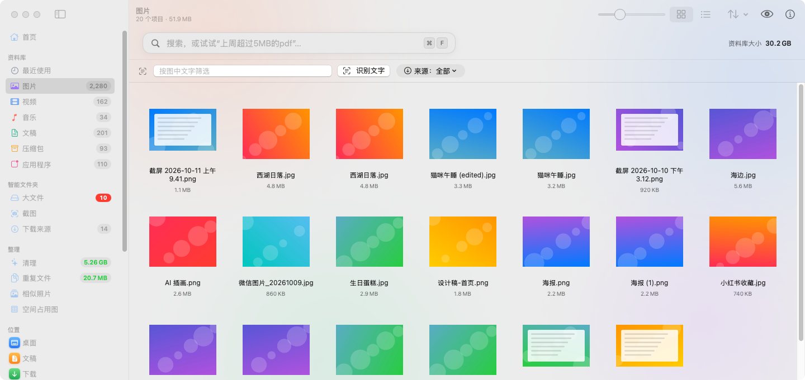
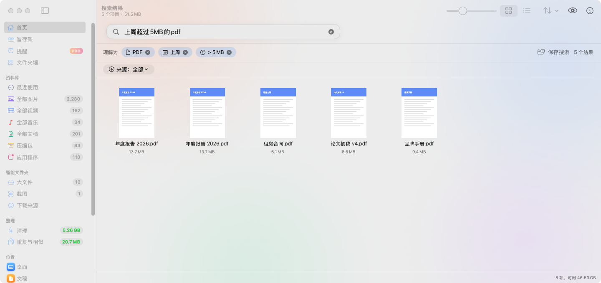
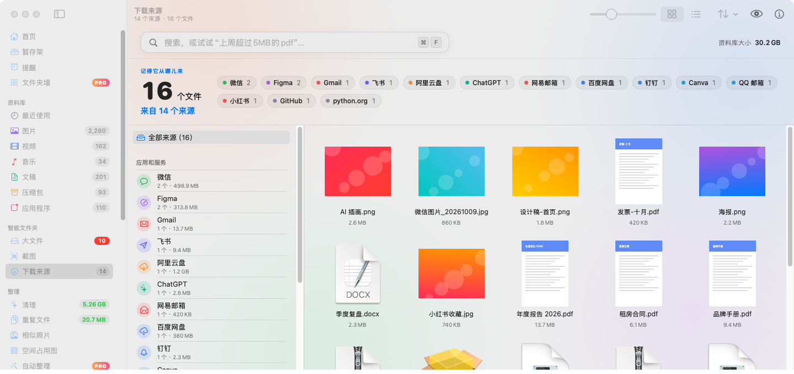
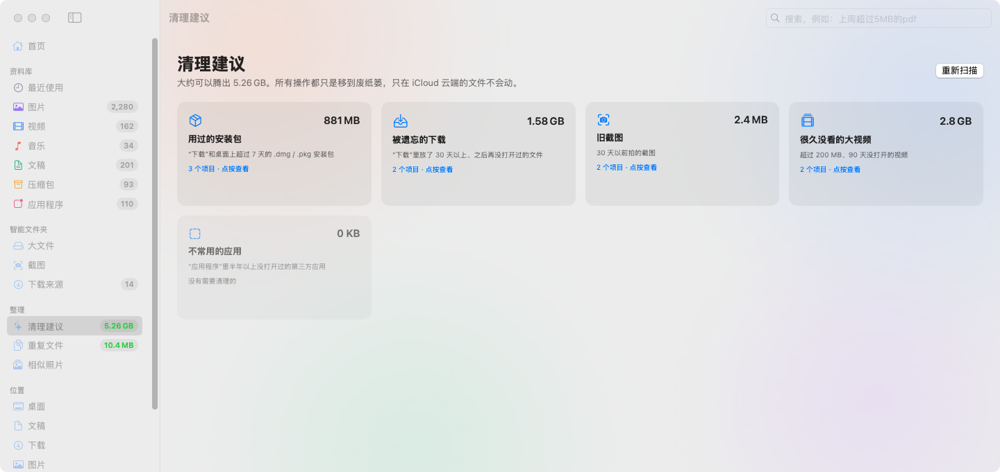
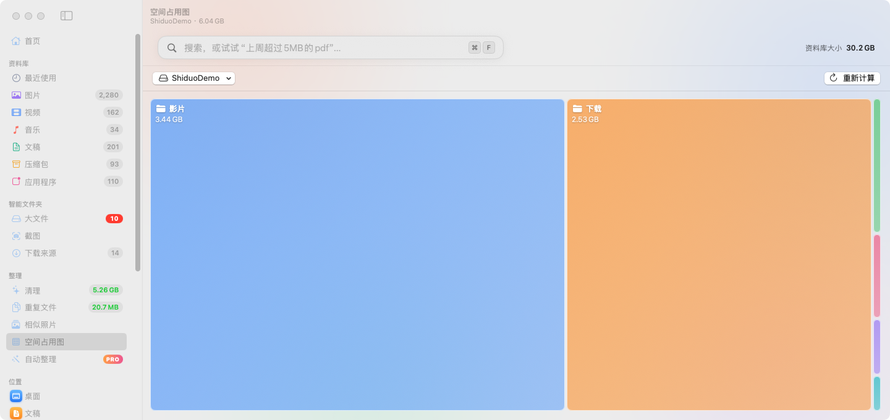
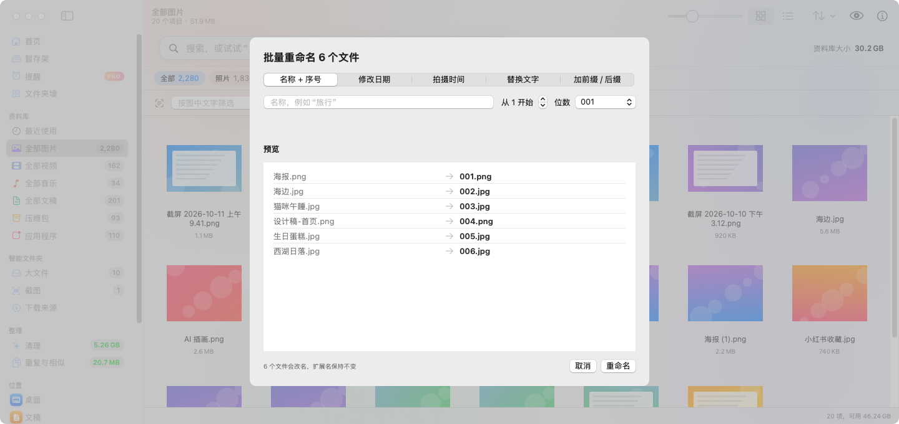

Visual library
Images, videos, music, documents, archives and apps, each with big thumbnails and an adjustable grid.

Plain-language search
Type “PDFs over 5 MB from last week” or “上周超过5MB的pdf” and see it turned into filters you can edit.

Downloaded from
Group files by the site or app they came from, such as Gmail, Google Drive, ChatGPT or WeChat.

Safe cleanup
Old installers, forgotten downloads, big old videos, duplicates and look-alike photos. Files always go to the Trash, never deleted outright.

Storage map
See which folders take up space at a glance.

Handy tools
Text in screenshots (on-device OCR), batch rename, image conversion, Finder tags and a global quick-search panel.